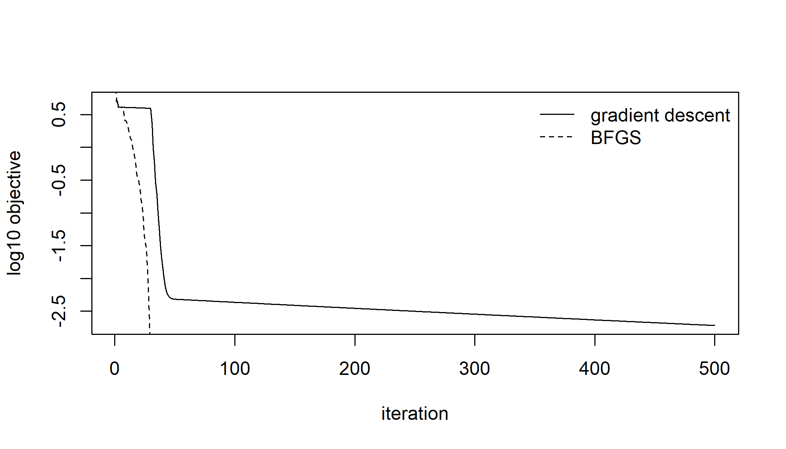

| line search | iterations | f evaluations | gradients | gradients per iteration |
|---|---|---|---|---|
| armijo | 40 | 50 | 41 | 1.02 |
| wolfe | 36 | 50 | 40 | 1.11 |
4 The optimizers7 package
The previous chapter fitted distributions with three fixed optimization routines, and the user could not supply a fourth. This chapter removes that limitation: it presents the optimization methods of optimizers7 and the conditions an optimization routine must satisfy before it can be plugged into the toolkit.
None of the mathematics is new. Nocedal and Wright (2006) is the standard modern account of almost everything in this chapter, with Dennis and Schnabel (1983) and Bonnans et al. (2006) as the two other general references; the text states the results the implementations rest on and cites the source of each, without reproving them.
Section 4.1 studies a single iteration: what makes a direction a descent direction, which conditions a step length must satisfy, and why a decrease of the objective at every step is not enough. The main result there, Zoutendijk’s theorem, upgrades “each step decreases \(f\)” to “the gradient converges to zero”, which is a much stronger statement.
Section 4.2 studies the choice of direction, and orders the methods by the amount of curvature information they store. Newton’s method uses the exact Hessian and must repair it when it is not positive definite. The quasi-Newton methods build an approximation from the gradients already computed, and two natural requirements determine that approximation almost uniquely. Below them come methods that keep a few pairs of vectors, one vector, and finally a single number. The methods remain effective even near the bottom of this list.
Section 4.3 treats objectives with kinks, such as a sum of absolute deviations or the location part of a Laplace likelihood. For these the central assumption of the earlier sections fails: the subgradient at the minimizer has norm one instead of becoming small, so a gradient-based method reaches the answer and then reports failure. Two remedies are presented. Direct search methods abandon derivatives entirely, at a high cost in evaluations and with a weaker guarantee; the bundle method keeps the derivatives but stops requiring any single one of them to vanish. Nelder and Mead (1965) founded the first approach and Lemaréchal (1975) the second.
Section 4.4 covers two topics outside the descent framework. Box constraints are removed by a change of variable, so that no algorithm needs any knowledge of them; and Adam takes steps that are not descent steps, which is the price of tolerating a gradient computed from a random subset of the observations.
Section 4.5 covers the choice of the starting point. The natural answer, a vector of zeros, fails for any model with a scale parameter, and the correct answer reuses the change of variable of the section before it. The same section treats a related question that several starts can answer and a single run cannot: how many distinct optima a problem has. Section 4.6 closes the chapter with the interface in use: the stopping rules, a rule written by a user, the validator, and bounds.
4.1 Descent directions and line searches
Let \(f : \mathbb{R}^{p} \to \mathbb{R}\) be a differentiable function to be minimized, and let \(x\) be a point where the gradient \(g = \nabla f(x)\) is not zero. This section studies a single iteration: how to choose a direction \(d\), and how to choose the step length along it. Both choices need care, because a sequence of steps can decrease \(f\) at every iteration and still fail to converge to a minimizer; the conditions introduced below exist to rule out exactly that failure.
4.1.1 Descent directions
The first-order expansion of \(f\) along \(d\) is
\[f(x + \alpha d) = f(x) + \alpha\, g^\top d + o(\alpha), \qquad \alpha \to 0^{+},\]
so for small steps the sign of \(g^\top d\) determines the behavior of \(f\). If \(g^\top d < 0\), then \(f(x + \alpha d) < f(x)\) for all sufficiently small \(\alpha > 0\); if \(g^\top d > 0\), every small step increases \(f\); if \(g^\top d = 0\), the first-order term gives no information.
Definition 4.1 (Descent direction) A vector \(d \in \mathbb{R}^{p}\) is a descent direction for \(f\) at \(x\) when \(g^\top d < 0\), where \(g = \nabla f(x)\).
The simplest descent direction is \(d = -g\), for which \(g^\top d = -\lVert g \rVert^{2} < 0\) whenever \(g \neq 0\); among all directions of a given Euclidean length it minimizes \(g^\top d\), and for this reason it is called the steepest descent direction. Most of the methods in Section 4.2 instead use
\[d = -B g\]
for some symmetric positive definite matrix \(B\). Such a direction is always a descent direction, because
\[g^\top d = -g^\top B g < 0 \quad \text{for } g \neq 0\]
by the definition of positive definiteness. This fact connects the two halves of the chapter. A curvature model must be positive definite because otherwise the direction it produces may not be a descent direction at all, and when Newton’s method repairs an indefinite Hessian in Section 4.2.1, it does so to preserve exactly this inequality.
Conjugate gradients, in Section 4.2.4, does not have the form \(-Bg\) for any stored matrix, so its direction is not guaranteed to be a descent direction in advance. The implementation therefore tests \(g^\top d < 0\) at each step and replaces the direction by \(-g\) when the test fails.
4.1.2 The sufficient-decrease and Wolfe conditions
Given a descent direction, a step length \(\alpha > 0\) must be chosen. Accepting any \(\alpha\) with \(f(x + \alpha d) < f(x)\) is not sufficient, and a concrete example shows why.
Consider minimizing \(f(x) = x^{2}\) from \(x_0 = 1\), with step lengths chosen so that the iterates are
\[x_k = (-1)^{k}\left(1 + 2^{-k}\right).\]
Each iterate is closer to the origin than the last, so \(f\) decreases at every step, and yet \(\lvert x_k \rvert \to 1\): the sequence converges to a point that is not a minimizer, and the gradient never approaches zero. The steps were too long relative to the decrease they achieved, since each one overshoots the minimum. The opposite failure occurs when the steps are too short: with \(x_k = 1 + 2^{-k}\), \(f\) again decreases at every step and again converges away from the minimizer.
The first failure is prevented by requiring a decrease proportional to the one the local slope predicts. Along \(d\) the first-order model predicts a decrease of \(-\alpha\, g^\top d\); requiring a fixed fraction of it gives the following condition.
Definition 4.2 (Sufficient decrease) For \(c_1 \in (0, 1)\), a step length \(\alpha\) satisfies the Armijo condition when
\[f(x + \alpha d) \le f(x) + c_1 \alpha\, g^\top d. \tag{A}\]
Since \(g^\top d < 0\), the right-hand side is strictly below \(f(x)\), so (A) implies a decrease; and because the required decrease grows with \(\alpha\), a long step is accepted only when it achieves a proportionally large decrease. The condition is always satisfiable: from the first-order expansion,
\[\frac{f(x + \alpha d) - f(x)}{\alpha} \longrightarrow g^\top d < c_1 g^\top d \quad \text{as } \alpha \to 0^{+},\]
where the inequality holds because \(c_1 < 1\) and \(g^\top d\) is negative, so (A) holds for all sufficiently small \(\alpha\). This justifies backtracking: start from a trial length, and if (A) fails, shrink the step and try again. The procedure terminates, and the package’s armijo() implements exactly this. The condition is due to Armijo (1966).
Backtracking does not address the second failure, steps that are too short: nothing in (A) forbids a sequence of ever smaller accepted steps. Ruling that out requires a condition that a small step violates, and the natural quantity to examine is the slope rather than the value.
Definition 4.3 (The Wolfe conditions) For \(0 < c_1 < c_2 < 1\), a step length \(\alpha\) satisfies the weak Wolfe conditions when (A) holds together with
\[\nabla f(x + \alpha d)^\top d \ge c_2\, g^\top d, \tag{W}\]
and the strong Wolfe conditions when (W) is strengthened to
\[\bigl\lvert \nabla f(x + \alpha d)^\top d \bigr\rvert \le c_2 \bigl\lvert g^\top d \bigr\rvert. \tag{W$'$}\]
Condition (W) requires the slope along \(d\) to have risen — to have become less steeply negative — by a definite factor. At \(\alpha = 0\) the slope is \(g^\top d\) and (W) is violated because \(c_2 < 1\), so (W) forces the step away from zero, which is precisely what (A) cannot do. The two conditions act in opposite directions, and a step satisfying both exists whenever \(f\) is bounded below along \(d\). As \(\alpha\) grows, either \(f\) eventually violates (A), in which case a mean-value argument at the first such \(\alpha\) produces a point where both conditions hold, or \(f\) decreases forever and the problem is unbounded.
Both forms are due to Wolfe (1969), and Moré and Thuente (1994) gives the algorithm that has become the standard way of finding a step that satisfies them. The strong form (W\('\)) additionally forbids the slope from becoming strongly positive, which keeps the accepted point near a local minimum of \(\alpha \mapsto f(x + \alpha d)\). It costs nothing extra, because a search able to test (W) has already evaluated the gradient at the trial point. The package’s wolfe() implements the strong form by the usual two-phase procedure: it brackets an interval known to contain an acceptable point, expanding until (A) fails or the slope turns positive, and then zooms into the interval by interpolation until both conditions hold.
4.1.3 Zoutendijk’s theorem
The Wolfe conditions matter because they yield a global convergence result that sufficient decrease alone does not.
Theorem 4.1 (Zoutendijk) Let \(f\) be bounded below and continuously differentiable on an open set containing the level set \(\{x : f(x) \le f(x_0)\}\), with \(\nabla f\) Lipschitz there. If each iterate is \(x_{k+1} = x_k + \alpha_k d_k\) with \(d_k\) a descent direction and \(\alpha_k\) satisfying the Wolfe conditions, then
\[\sum_{k \ge 0} \cos^{2}\!\theta_k \, \lVert g_k \rVert^{2} < \infty, \qquad \text{where} \quad \cos\theta_k = \frac{-g_k^\top d_k}{\lVert g_k \rVert\, \lVert d_k \rVert}.\]
The argument is due to Zoutendijk (1970) and is given in full in Nocedal and Wright (2006). Its structure is simple. The curvature condition (W) bounds the step length from below, and the Lipschitz continuity of the gradient bounds it from above. Substituting the lower bound into the sufficient-decrease condition (A) shows that each iteration decreases \(f\) by at least a fixed multiple of \(\cos^{2}\!\theta_k \lVert g_k \rVert^{2}\). Since \(f\) is bounded below, the total decrease is finite, and the series converges.
The consequence used throughout the chapter is the following. A convergent series has terms tending to zero, so \(\cos^{2}\theta_k \lVert g_k \rVert^{2} \to 0\). If the directions never become orthogonal to the gradient, that is, if \(\cos\theta_k \ge \delta > 0\) for all \(k\), then \(\lVert g_k \rVert \to 0\). The line search supplies one half of the guarantee and the direction supplies the other, and neither is sufficient alone. This is also why the package makes the line search an object carried by the optimizer rather than a fixed part of each algorithm: the theorem is a statement about the pair.
For \(d_k = -B_k g_k\) the angle condition becomes a statement about the condition number of \(B_k\),
\[\cos\theta_k = \frac{g_k^\top B_k g_k}{\lVert g_k \rVert \,\lVert B_k g_k \rVert} \ \ge\ \frac{\lambda_{\min}(B_k)}{\lambda_{\max}(B_k)},\]
so a curvature model whose eigenvalues stay within a fixed positive band inherits global convergence. This bound explains two implementation choices that appear later: Section 4.2.1 floors the eigenvalues of a repaired Hessian instead of merely making them positive, and Section 4.2.2 skips an update that would violate the curvature condition.
4.1.4 Cost of the two searches
The two searches differ in what they evaluate. Backtracking needs only values of \(f\): it computes \(g^\top d\) once, at the current point, and then evaluates \(f(x + \alpha d)\) for a shrinking sequence of \(\alpha\). A Wolfe search must test (W), which involves \(\nabla f(x + \alpha d)\), so it evaluates the gradient at every trial point. The comparison below, and several later in the chapter, use the function of Rosenbrock (1960), whose narrow curved valley is the standard test of how a method behaves when the curvature changes direction along the path.
The extra cost buys something specific. The gradient evaluated at the accepted point is needed by the next iteration in any case, so the additional cost is only the gradients spent at rejected trials. In exchange the method obtains Theorem 4.1 and a step length that satisfies the curvature condition, which is what Section 4.2.2 needs to keep its approximation positive definite. A quasi-Newton method paired with a Wolfe search never has to skip an update; one paired with backtracking sometimes does.
The last column summarizes the difference. A backtracking search spends almost exactly one gradient per iteration — the one it needs to form the next direction — because its rejected trials cost only function values. A Wolfe search spends about a third more, the surplus being the gradients evaluated at trial points it then rejects.
The comparison is not only a matter of cost. The Wolfe run needs noticeably fewer iterations, because a step length satisfying the curvature condition is a better step length, so the total gradient counts differ by less than the per-iteration figures suggest. The difference that remains pays for Theorem 4.1, which backtracking alone does not provide, and for the guarantee in Section 4.2.2 that the curvature approximation never has to reject an update.
4.2 Second-order and quasi-Newton methods
Every method in this section chooses its direction in the same way: it builds a quadratic model of \(f\) around the current point and steps towards the minimizer of that model. Writing \(g = \nabla f(x)\) and letting \(M\) denote the matrix that plays the role of the curvature, the model is
\[m(d) = f(x) + g^\top d + \tfrac{1}{2} d^\top M d,\]
and setting \(\nabla m(d) = g + M d = 0\) gives
\[d = -M^{-1} g.\]
The methods differ in what they use for \(M\). This section presents them in order of how much they store: the exact Hessian, then an approximation to its inverse of the same size, then the last few pairs of vectors that approximation was built from, then a single vector, then a single number. The methods remain effective even near the bottom of the list.
4.2.1 Newton’s method
The most direct choice is the true Hessian, \(M = \nabla^{2} f(x)\), which makes \(m\) the second-order Taylor expansion and the step exact for a quadratic objective. Near a strict local minimum the resulting iteration converges quadratically, which no other method in this chapter achieves, and this is the reason newton() exists.
Away from a minimum the Hessian may be indefinite or singular, and the step is then wrong in a qualitative sense, not just inaccurate. If \(H\) has a negative eigenvalue \(\lambda < 0\) with eigenvector \(v\), the model \(m\) is unbounded below along \(v\), and its stationary point is a saddle rather than a minimum. Moreover, the direction \(d = -H^{-1} g\) can satisfy \(g^\top d > 0\), which by Definition 4.1 points uphill. The line search then finds no acceptable step and the run stops for a reason unrelated to the actual problem.
\(H\) must therefore be replaced by a positive definite matrix near it. Two standard repairs are available, both described in Nocedal and Wright (2006) and Dennis and Schnabel (1983).
The eigenvalue repair takes the symmetric decomposition \(H = V \Lambda V^\top\) and replaces \(\Lambda\) by \(\tilde\Lambda\) with
\[\tilde\lambda_i = \max(\lambda_i, \varepsilon),\]
for a floor \(\varepsilon > 0\), giving \(\tilde H = V \tilde\Lambda V^\top\). This repair is minimal in a precise sense: it changes only the problematic eigenvalues and leaves the others exactly as they were, so the curvature that the Hessian estimated correctly is preserved. It is the default. The floor serves a definite purpose: with \(\varepsilon = 0\) the repaired matrix could be singular, and with \(\varepsilon\) very small its condition number could destroy the angle bound at the end of Section 4.1.3. The floor keeps \(\cos\theta_k\) away from zero.
The ridge repair takes \(\tilde H = H + \tau I\), with \(\tau\) the smallest multiple of the identity that makes the result positive definite, found by attempting a Cholesky factorization and doubling \(\tau\) on failure. It is cheaper, because it needs no eigendecomposition, but less precise: adding \(\tau I\) shifts every eigenvalue, so the directions in which the Hessian was informative are distorted together with the ones in which it was not.
Both repairs guarantee the property that matters: the matrix actually inverted is positive definite, so the direction is a descent direction, and the line search can find an acceptable step.
NoteNumerical Hessians
newton() accepts an objective with no analytic Hessian and obtains one by differencing the gradient once. When the gradient is analytic this is a single numerical differentiation and the result is accurate. When the gradient is itself obtained by finite differences, the Hessian becomes a difference of differences and the errors compound. This is the only place in the toolkit where two layers of numerical differentiation are composed, and it cannot be avoided: a Hessian computed from function values alone has no other form. For this reason an objective that supplies neither derivative is better served by bfgs(), which never forms a Hessian.
4.2.2 The BFGS update
The Hessian is expensive: \(p(p+1)/2\) second derivatives per iteration, plus a factorization costing \(O(p^{3})\). Quasi-Newton methods avoid this cost by building an approximation from information they already have, namely the gradients computed at successive iterates.
The available information is a secant pair. After moving from \(x\) to \(x_{+} = x + \alpha d\), write
\[s = x_{+} - x, \qquad y = \nabla f(x_{+}) - \nabla f(x).\]
For a quadratic with Hessian \(H\) these satisfy \(y = H s\) exactly, and for a general \(f\) the mean value theorem gives \(y = \bar{H} s\) for an average of Hessians along the segment. In both cases the pair describes the curvature in one direction, and it is natural to require the approximation to reproduce it.
Definition 4.4 (The secant equation) An approximation \(B_{+}\) to the Hessian satisfies the secant equation when \(B_{+} s = y\); equivalently, an approximation \(H_{+}\) to its inverse satisfies
\[H_{+}\, y = s.\]
These are \(p\) equations for the \(p(p+1)/2\) unknowns of a symmetric matrix, so they do not determine \(H_{+}\) by themselves. Two further requirements almost do. The first is that \(H_{+}\) be symmetric and positive definite, which Section 4.1 showed is necessary for the direction to be usable. The second is that \(H_{+}\) be as close as possible to the current \(H\), because the pair carries information about one direction only and should not overwrite what is known about the others.
Making “close” precise in a particular weighted Frobenius norm yields a unique answer, the BFGS update:
Theorem 4.2 (The BFGS update) With \(\rho = 1 / (y^\top s)\), the update
\[H_{+} = \left(I - \rho\, s y^\top\right) H \left(I - \rho\, y s^\top\right) + \rho\, s s^\top\]
satisfies the secant equation, is symmetric, and is positive definite whenever \(H\) is and \(y^\top s > 0\).
The three claims are short calculations, set out in Nocedal and Wright (2006) together with the variational characterization that singles this update out; the update was found independently by four authors in 1970, of whom Broyden (1970) is cited here. Applying \(H_{+}\) to \(y\) and using \(\rho\,y^\top s = 1\) collapses the middle factor to zero and leaves \(s\); symmetry is visible in the formula, since both terms are symmetric; and for positive definiteness one writes \(w = v - \rho\,y(s^\top v)\) and obtains
\[v^\top H_{+} v = w^\top H w + \rho\,(s^\top v)^{2},\]
whose two terms are non-negative and cannot vanish together, because \(s^\top v = 0\) would force \(w = v \neq 0\).
The last calculation is where the condition \(y^\top s > 0\) enters, and the condition has a direct meaning. The quantity
\[y^\top s = \bigl(\nabla f(x_{+}) - \nabla f(x)\bigr)^\top (x_{+} - x)\]
is positive exactly when the function curves upward along the step, that is, when the observed curvature is consistent with a minimum. On a non-convex objective it can be negative, and then no positive definite matrix satisfies the secant equation for that pair: the pair reports negative curvature, and a positive definite matrix cannot reproduce it.
When this happens the package skips the pair: whenever \(y^\top s \le \varepsilon \lVert s \rVert \lVert y \rVert\), the approximation is left unchanged and the skip is recorded in the trace. The alternative, damping the pair towards one that does satisfy the condition, would inject curvature that was never observed, so the pair is discarded instead.
A Wolfe search removes the problem entirely. Condition (W) states \(\nabla f(x_{+})^\top d \ge c_2 \nabla f(x)^\top d\); subtracting \(\nabla f(x)^\top d\) from both sides and multiplying by \(\alpha > 0\) gives
\[y^\top s \ \ge\ (c_2 - 1)\, \alpha\, \nabla f(x)^\top d \ > \ 0,\]
because \(c_2 < 1\) and the directional derivative is negative. A quasi-Newton method paired with a Wolfe search therefore never skips an update. This is the practical reason bfgs() defaults to the Wolfe search, while gd(), which has no approximation to protect, defaults to backtracking.
This advantage is a guarantee rather than an observed difference. On every smooth problem in the standard collection, and on a deliberately non-convex one as well, backtracking also skips no updates, because the curvature condition is simply never violated there. What the Wolfe search removes is the possibility of a skipped update, and the difference appears only on objectives less well behaved than any in this book.
4.2.3 Limited-memory BFGS
BFGS stores a \(p \times p\) matrix, which is acceptable for the handful of parameters of a single distribution and impossible for the thousands of a model with covariates. L-BFGS instead keeps the last \(m\) secant pairs, typically with \(m\) between 5 and 20, and never forms the matrix; the method is due to Nocedal (1980), with the convergence analysis and large-scale evidence in Liu and Nocedal (1989).
The method rests on the observation that the BFGS update in Theorem 4.2 is a sum of outer products, so applying \(H_k\) to a vector requires only inner products with the stored pairs. Unrolling the recursion gives the two-loop recursion: initialize \(q = g\), run backwards through the pairs computing
\[\alpha_i = \rho_i\, s_i^\top q, \qquad q \leftarrow q - \alpha_i y_i,\]
scale once by \(\gamma = (s_{k}^\top y_{k}) / (y_{k}^\top y_{k})\) using the most recent pair, then run forwards computing
\[\beta_i = \rho_i\, y_i^\top q, \qquad q \leftarrow q + (\alpha_i - \beta_i) s_i,\]
after which \(q = H_k g\). The cost is \(O(mp)\) in time and \(O(mp)\) in storage, against \(O(p^{2})\) for both in BFGS.
The scaling \(\gamma\) is the one part of the recursion that is a choice rather than an identity. It sets the initial approximation at each iteration to \(\gamma I\), where \(\gamma\) is the Rayleigh quotient of the most recent pair, an estimate of the inverse curvature along the direction most recently traveled. Without this scaling the recursion would start from \(I\), whose scale has no relation to the problem, and the first step of each iteration would be badly sized.
The cost of limited memory is that older curvature information is discarded. On a problem whose Hessian is nearly constant this costs almost nothing; on one where the curvature varies sharply, discarding can even help, because stale pairs describe a region the iterate has already left.
| method | iterations | stored numbers | gap from the optimum |
|---|---|---|---|
| BFGS | 98 | 3600 | 1.1e-11 |
| L-BFGS (m = 5) | 108 | 600 | 9.7e-12 |
| L-BFGS (m = 20) | 91 | 2400 | 2.0e-11 |
4.2.4 Conjugate gradients and Barzilai-Borwein
Two further methods store even less, and between them they cover the case a statistical model most often presents: a parameter vector too long for any \(p \times p\) matrix.
Conjugate gradients keeps one vector. Its direction is
\[d_k = -g_k + \beta_k d_{k-1},\]
which is not of the form \(-M^{-1}g\), and does not need to be. Recall from Section 4.1.1 why steepest descent is slow: under an exact line search consecutive directions are orthogonal, because the search stops where \(g_{k+1}^\top d_k = 0\), so on a narrow valley the iterates cross the floor repeatedly instead of traveling along it. The remedy is to combine each new gradient with the previous direction, and the entire method is the choice of how much weight \(\beta_k\) to give the previous direction.
On a quadratic with Hessian \(H\) and an exact line search, the classical choices of \(\beta\) make the directions conjugate, meaning \(d_i^\top H d_j = 0\) for \(i \neq j\). A set of \(p\) conjugate directions spans the space, and the one-dimensional minimizations along them are independent of one another, so the method terminates in exactly \(p\) steps without ever forming \(H\). The linear case is Hestenes and Stiefel (1952); the nonlinear case begins with Fletcher and Reeves (1964), and Hager and Zhang (2006) surveys the later developments.
The four formulas offered here agree on a quadratic and differ everywhere else:
\[\beta^{FR} = \frac{g_k^\top g_k}{g_{k-1}^\top g_{k-1}}, \quad \beta^{PR} = \frac{g_k^\top y_k}{g_{k-1}^\top g_{k-1}}, \quad \beta^{HS} = \frac{g_k^\top y_k}{d_{k-1}^\top y_k}, \quad \beta^{DY} = \frac{g_k^\top g_k}{d_{k-1}^\top y_k},\]
with \(y_k = g_k - g_{k-1}\) as before, due respectively to Fletcher and Reeves (1964), Polak and Ribière (1969), Hestenes and Stiefel (1952) and Dai and Yuan (1999). Fletcher–Reeves has the cleanest convergence theory and a known practical fault: after a poor step it can stall for many iterations. Polak–Ribière recovers immediately, because a small \(y\) sends \(\beta\) towards zero and the method back to steepest descent. Its known theoretical non-convergence is repaired by clamping \(\beta\) at zero; since \(\beta = 0\) restarts the method at steepest descent, the clamp is recorded in the trace as a restart.
Barzilai–Borwein keeps one number. The direction is \(d = -\alpha g\) with
\[\alpha^{BB1} = \frac{s^\top s}{s^\top y}, \qquad \alpha^{BB2} = \frac{s^\top y}{y^\top y},\]
the two Rayleigh quotients of the secant pair. Each is a scalar estimate of the inverse curvature along the direction just traveled, so the method is Section 4.2.2 with everything discarded except one number. On a quadratic, where the curvature is constant, the estimate is exact and the second step lands on the answer. The method is due to Barzilai and Borwein (1988), and Raydan (1997) established that it is practical on large problems.
| method | curvature stored | iterations | converged |
|---|---|---|---|
| newton | p(p+1)/2 | 21 | TRUE |
| bfgs | p^2 | 36 | TRUE |
| lbfgs | 2mp | 38 | TRUE |
| cg | 2p | 34 | TRUE |
| bb | 1 | 63 | TRUE |
| gd | 0 | 13680 | TRUE |
The table shows that the amount of stored curvature matters less than its presence. Keeping the exact Hessian, a full approximation to its inverse, twenty pairs of vectors, one vector or one number changes the iteration count only moderately. Keeping nothing at all is the one configuration that fails: gradient descent is the only row that does not converge, and conjugate gradients repairs it with a single remembered direction.
Every run can record its own path. With keep_trace = TRUE the result carries one row per iteration: the objective value, the gradient norm, the step taken and any safeguard that fired. Plotting the recorded values shows the difference between the rows of the table as trajectories rather than as two numbers:
rb <- optimizers7::minimize(optimizers7::bfgs(keep_trace = TRUE),
f, c(-1.2, 1), gr = gr)
rg <- optimizers7::minimize(optimizers7::gd(maxit = 500, keep_trace = TRUE),
f, c(-1.2, 1), gr = gr)
plot(rg@trace$iteration, log10(rg@trace$value), type = "l",
xlab = "iteration", ylab = "log10 objective")
lines(rb@trace$iteration, log10(rb@trace$value), lty = 2)
legend("topright", c("gradient descent", "BFGS"), lty = c(1, 2), bty = "n")
For Barzilai–Borwein the iteration count in the table depends on the line search as much as on the stored number. The method makes progress through steps that temporarily increase the objective in order to be aligned with the curvature later, and the sufficient-decrease condition of Definition 4.2 rejects exactly those steps. The standard remedy, due to Grippo, Lampariello, and Lucidi (1986), is a nonmonotone line search, which requires improvement over the worst of the last several values instead of over the current one; Birgin, Martínez, and Raydan (2000) pairs it with Barzilai-Borwein steps and is the reference for the combination. bb() uses it by default, and with it the method reaches the minimum of Rosenbrock in 68 iterations and 77 objective evaluations, against 82 and 186 under plain backtracking.
4.3 Non-smooth objectives
Everything so far assumed that \(f\) is differentiable and that the gradient becomes small near a solution. The second part of this assumption is the one that fails first. For an objective with a kink at its minimizer the gradient does not become small: it does not exist at the minimizer, and the one-sided derivatives on either side do not approach zero. On such an objective the methods of Section 4.2 reach the correct point and then report failure, because the quantity their stopping rule tests never becomes small.
The example is a standard one. Minimizing
\[f(\mu) = \sum_{i=1}^{n} \lvert y_i - \mu \rvert\]
is the estimation of a median, and it is the location part of a Laplace likelihood; the toolkit met exactly this objective in Section 3.3. The function is piecewise linear with a kink at every observation, and its minimizer is one of the observations.
4.3.1 The subdifferential
For a convex \(f\) the derivative is replaced by a set.
Definition 4.5 (Subgradient and subdifferential) For convex \(f\), a vector \(v\) is a subgradient at \(x\) when
\[f(z) \ \ge\ f(x) + v^\top (z - x) \qquad \text{for all } z,\]
and the set of all such \(v\) is the subdifferential \(\partial f(x)\).
Geometrically, a subgradient is the slope of an affine function that touches \(f\) at \(x\) and lies below it everywhere, so the subdifferential collects every supporting hyperplane at that point. Where \(f\) is differentiable the subdifferential contains exactly one element, \(\partial f(x) = \{\nabla f(x)\}\); at a kink it contains many.
The optimality condition generalizes directly, and follows in one line from the definition: setting \(v = 0\) in Definition 4.5 turns the subgradient inequality into \(f(z) \ge f(x)\) for every \(z\), which is minimality, and the argument reads the same in both directions.
Proposition 4.1 (Fermat’s rule) A convex \(f\) attains its minimum at \(x^{\star}\) if and only if \(0 \in \partial f(x^{\star})\).
The subdifferential, Fermat’s rule and the other results this section uses are developed in Rockafellar (1970) and, in the form closest to the algorithms here, in Hiriart-Urruty and Lemaréchal (1993).
Applied to the absolute-deviation objective, these definitions give the following picture. Away from the data points, \(f'(\mu) = \#\{y_i < \mu\} - \#\{y_i > \mu\}\); at an observation \(\mu = y_{(k)}\) the subdifferential is the interval between the two one-sided slopes. Fermat’s rule is satisfied at the median, where the counts on either side balance. The individual subgradients, however, do not become small there. Each term \(\lvert y_i - \mu \rvert\) contributes \(\pm 1\) according to the side on which \(y_i\) falls, so any particular subgradient — the value a gr function returns — is an integer. Away from the median its size is comparable to \(n\); at the median itself it is still at least one.
This is the central difficulty: the quantity a gradient-based stopping rule tests does not vanish at the solution, so no tolerance both fires there and stays quiet elsewhere. The method reaches the minimizer, the line search finds no acceptable step because every direction leads uphill from the kink, and the run stops with a failure report while standing on the answer.
| method | point reached | distance to the median | a subgradient there | converged |
|---|---|---|---|---|
| bfgs | -0.18760011 | 1.1e-12 | 1.0 | FALSE |
| bundle | -0.18760011 | 9.3e-10 | 1.0 | TRUE |
Both methods reach the same point to the last printed digit, and at that point a subgradient has size one for both; only one of the two reports success. The difference is not in the arithmetic but in the quantity being tested, which is the subject of the next two sections.
4.3.2 The cutting-plane model
Since no single subgradient vanishes at the solution, the bundle method stops testing single subgradients. It keeps a collection of them, gathered at the points already visited, and works with the model that the collection defines.
Given points \(z_1, \dots, z_k\) with values \(f_j = f(z_j)\) and subgradients \(v_j \in \partial f(z_j)\), Definition 4.5 states that each affine function \(\ell_j(x) = f_j + v_j^\top (x - z_j)\) lies below \(f\) everywhere. Their pointwise maximum therefore also lies below \(f\), and it becomes a better model as more planes are collected:
\[\check{f}(x) \ =\ \max_{1 \le j \le k}\ \bigl\{ f_j + v_j^\top (x - z_j) \bigr\} \ \le\ f(x).\]
This is the cutting-plane model, and its useful property is that it is piecewise linear: a kink, which is two linearizations meeting, is exactly the shape it represents naturally, while a quadratic model must either smooth the kink away or place spurious curvature across it.
Minimizing \(\check{f}\) alone would not be safe. A model built from finitely many planes can be unbounded below, and even when it is bounded its minimizer may lie far outside the region the collected planes describe. A proximal term is therefore added, anchoring the step to the current point \(\hat{x}\), called the stability center:
\[d^{\star} \ =\ \operatorname*{arg\,min}_{d}\ \left\{ \max_{j}\ \bigl( -\alpha_j + v_j^\top d \bigr) + \frac{1}{2t} \lVert d \rVert^{2} \right\}, \tag{P}\]
where \(t > 0\) controls how far the model is trusted and
\[\alpha_j \ =\ f(\hat{x}) - \ell_j(\hat{x}) \ \ge\ 0\]
is the linearization error of plane \(j\), the amount by which the plane underestimates \(f\) at the current point. It is non-negative by Definition 4.5, and it gives an old plane, collected far away, less influence than a recent one.
4.3.3 The dual of the bundle subproblem
Problem (P) is a quadratic program in \(d\) with a piecewise-linear term. It is solved through its dual, which is a small problem with a simple feasible set.
Theorem 4.3 (The bundle subproblem and its dual) Let \(V\) be the matrix with columns \(v_1, \dots, v_k\) and \(\alpha\) the vector of linearization errors. Then the solution of (P) is \(d^{\star} = -t\, V\lambda^{\star}\), where \(\lambda^{\star}\) solves
\[\min_{\lambda \in \Delta_k}\ \ \frac{t}{2} \lVert V \lambda \rVert^{2} + \alpha^\top \lambda, \qquad \Delta_k = \Bigl\{ \lambda \ge 0 : \textstyle\sum_j \lambda_j = 1 \Bigr\},\]
and the optimal value of (P) is
\[v \ =\ -\Bigl( t \lVert V\lambda^{\star} \rVert^{2} + \alpha^\top \lambda^{\star} \Bigr) \ \le\ 0 .\]
The dual is derived in the usual way. Write (P) with an epigraph variable \(u\), so that the objective becomes \(u + \lVert d \rVert^{2}/(2t)\) subject to \(-\alpha_j + v_j^\top d \le u\). Stationarity of the Lagrangian in \(u\) forces \(\sum_j \lambda_j = 1\), which is the origin of the simplex constraint, and stationarity in \(d\) gives \(d = -t V\lambda\). Substituting both back yields the stated minimization over \(\Delta_k\), and strong duality holds because the problem is convex with a strictly feasible point. The construction is due to Lemaréchal (1975) and Kiwiel (1990); Bonnans et al. (2006) presents it in the form used here.
Write \(\bar{v} = V\lambda^{\star}\) for the aggregate subgradient and \(\bar\alpha = \alpha^\top \lambda^{\star}\) for the aggregate error. The aggregate is a convex combination of collected subgradients, and by convexity of the subdifferential it is itself a subgradient of the model at \(\hat{x}\). Both \(\lVert \bar{v} \rVert\) and \(\bar\alpha\) are non-negative, and
\[\lVert \bar{v} \rVert^{2} + \bar\alpha \ =\ 0 \iff \bar{v} = 0 \ \text{ and } \ \bar\alpha = 0,\]
which states that zero lies in the convex hull of the collected subgradients with no linearization error. This is the computable counterpart of \(0 \in \partial f(\hat{x})\) in Proposition 4.1, it is the correct quantity to test, and it is the quantity that crit_stationary() reads.
ImportantThe stopping quantity
The value \(-v\) from Theorem 4.3 also vanishes at a solution, and reads naturally as the improvement the model still expects, so it looks like a reasonable stopping quantity. It is not, because it carries a factor of \(t\), and \(t\) is reduced whenever the model over-promises. A run in difficulty can therefore drive \(-v\) below any fixed tolerance by shrinking its trust parameter rather than by approaching a minimum, and would then report convergence at a point its own model still describes as steep. Dropping the factor of \(t\) leaves \(\lVert \bar{v} \rVert^{2} + \bar\alpha\), which shrinking \(t\) cannot reduce.
4.3.4 Serious steps, null steps and aggregation
Given \(d^{\star}\), the trial point is \(z = \hat{x} + d^{\star}\), and the decision whether to move there follows the same principle as an Armijo condition: the step must deliver a fixed fraction of the decrease the model promised,
\[f(z) \ \le\ f(\hat{x}) + m\, v, \qquad m \in (0, 1).\]
If the condition holds, the center moves; this is a serious step. If it does not, the center stays, but the iteration is still useful, because the trial point contributes its own subgradient to the collection and the model is strictly better at the next iteration. This is a null step, and a run with many null steps is refining its representation of a kink, not failing.
Without intervention the collection grows without bound. It is capped by aggregation rather than by discarding: when the bundle is full, the oldest planes are replaced by the single affine function that the dual solution defines,
\[\ell_{\text{agg}}(x) = f(\hat{x}) - \bar\alpha + \bar{v}^\top (x - \hat{x}),\]
which lies below \(f\) because it is a convex combination of functions that do, and which summarizes the contribution of the discarded planes. Deleting old planes outright would lose that information and can stall the method; keeping the aggregate is what makes a bounded bundle safe.
4.3.5 Direct search methods
A second way of handling a non-smooth objective is to use no derivatives at all. This costs many more evaluations and yields a weaker guarantee, but it requires nothing of the objective beyond a value, which is sometimes all that is available.
The concept that carries the theory is the positive spanning set; the theory is collected in Conn, Scheinberg, and Vicente (2009) and surveyed in Kolda, Lewis, and Torczon (2003).
Definition 4.6 (Positive spanning set) A finite set \(D \subset \mathbb{R}^{p}\) positively spans \(\mathbb{R}^{p}\) when every \(w \in \mathbb{R}^{p}\) can be written \(w = \sum_{d \in D} c_d\, d\) with all \(c_d \ge 0\).
The relevance is the following. If \(D\) positively spans the space and \(f\) is differentiable at \(x\) with \(\nabla f(x) \neq 0\), then some \(d \in D\) satisfies \(\nabla f(x)^\top d < 0\). Otherwise \(-\nabla f(x)\), a non-negative combination of the elements of \(D\), would give \(-\lVert \nabla f(x) \rVert^{2} \ge 0\), a contradiction. A poll that fails in every direction of \(D\) is therefore evidence about the point rather than about the directions, and this justifies shrinking the poll radius: the limit points of a run whose radius goes to zero are stationary. compass() polls the \(2p\) signed coordinate axes, which positively span the space.
For an \(f\) that is only Lipschitz the argument fails, and the way it fails is informative. A kink whose ridge runs diagonally is descended by no coordinate direction, so the poll fails at a point that is not stationary, the radius shrinks, and the run stops there. The repair, which is the idea behind the mesh adaptive direct search of Audet and Dennis (2006), is to let the set of directions used over the whole run become dense in the sphere, so that no descent direction can be missed forever. Drawing a fresh random orthonormal basis at each poll achieves this with probability one.
| method | value reached | evaluations |
|---|---|---|
| compass, coordinate | 5.00e-02 | 121 |
| compass, mads | 6.91e-03 | 207 |
| nelder-mead | 9.44e-17 | 343 |
| bundle | 8.21e-09 | 52 |
The table contains three separate findings.
The first two rows illustrate the argument just given. A fixed set of directions stops on the ridge, at a point that is not stationary, having exhausted its poll without finding the descent direction that exists. Random directions do an order of magnitude better and still do not arrive, because a finite number of directions from a fixed center remains a poor instrument for a kink.
The third row shows Nelder–Mead solving the problem to machine precision, better than either poll and better than the bundle method. The reason is that a simplex is not a poll: it has no fixed center and no fixed set of offsets, it deforms, and on a problem whose descent direction lies along a ridge it deforms into a long thin simplex aligned with that ridge. This adaptivity is exactly what a fixed pattern lacks. What Nelder–Mead lacks in exchange is a guarantee: the positive-spanning argument does not apply to it, the counterexample of McKinnon (1998) shows that it can converge to a point that is not a minimizer, and the positive results of Lagarias et al. (1998) cover only one and two dimensions. It also needs 343 evaluations here.
The last row shows the bundle method arriving, with a guarantee, in a seventh of the evaluations. It is the only method in the table that uses the available derivative information without requiring any single derivative to vanish.
4.4 Box constraints and stochastic gradients
Two topics remain, and neither fits inside the descent framework of the previous sections. The first is the handling of box constraints, which the toolkit removes by a change of variable rather than enforcing. The second is a method that gives up the requirement of descent altogether, and is useful for stochastic objectives precisely because it does.
4.4.1 The box reparametrization
Suppose each parameter is confined to an interval, \(\theta_j \in (L_j, U_j)\), with either endpoint possibly infinite. Passing such constraints to a general optimizer creates the difficulties described in Section 3.3.1: every proposal must be tested for admissibility, a step that overshoots must be shortened rather than taken, and near an endpoint the objective may be unbounded or undefined.
The toolkit removes the constraint instead of enforcing it. The alternative, keeping the box and working with an active set, is the approach of Byrd et al. (1995), and it is the right choice when an optimum lies exactly on a bound; the comparison appears below. Each bounded coordinate is reparametrized by a diffeomorphism \(h_j : \mathbb{R} \to (L_j, U_j)\),
\[\theta_j \ =\ h_j(\eta_j) \ =\ \begin{cases} L_j + e^{\eta_j} & \text{lower bound only,} \\[4pt] U_j - e^{\eta_j} & \text{upper bound only,} \\[4pt] L_j + (U_j - L_j)\,\dfrac{1}{1 + e^{-\eta_j}} & \text{both finite,} \end{cases}\]
and the optimizer runs unconstrained in \(\eta\). These are the bounded links of Chapter 2, reused here for the purpose they were written for. Every point the optimizer proposes is admissible by construction, so there is no rejection step and no boundary for a line search to encounter.
The cost of the change of variable is a set of derivative corrections, and they are cheap because the Jacobian is diagonal: each coordinate carries its own transform and nothing else. With \(F(\eta) = f(h(\eta))\),
\[\frac{\partial F}{\partial \eta_i} \ =\ \frac{\partial f}{\partial \theta_i}\, h_i'(\eta_i), \qquad \frac{\partial^{2} F}{\partial \eta_i \partial \eta_j} \ =\ \frac{\partial^{2} f}{\partial \theta_i \partial \theta_j}\, h_i'(\eta_i)\, h_j'(\eta_j) \ +\ \delta_{ij}\, \frac{\partial f}{\partial \theta_i}\, h_i''(\eta_i).\]
The second-derivative term appears only on the diagonal, and only because \(h\) is not affine; it is the difference between transforming a Hessian and merely rescaling one. In matrix form,
\[\nabla^{2} F \ =\ \operatorname{diag}(h')\, \nabla^{2} f\, \operatorname{diag}(h') \ +\ \operatorname{diag}\!\bigl(\nabla f \odot h''\bigr),\]
which is the congruence of Section 3.1.4 with one extra diagonal term. Every algorithm in this chapter receives these corrected derivatives without any information that a box was involved.
NoteOptima on a bound
An optimum lying exactly on a bound cannot be reached, because reaching it requires \(\eta\) to go to infinity. The optimizer keeps moving, improves by less and less, and stops on its iteration budget at a point close to the constraint but not on it.
For the statistical use this mechanism serves — a positive variance, a probability inside the unit interval, a shape parameter that must not vanish — the optimum is interior and the situation does not arise. For a genuine box-constrained problem whose solution has active constraints, an active-set method is the appropriate tool.
A second limitation is arithmetical rather than mathematical: in exact arithmetic \(h\) never attains its endpoints, but in double precision it does. The inverse logit returns exactly one above \(\eta \approx 37\), and \(L + e^{\eta}\) rounds to \(L\) once \(e^{\eta}\) falls below half an ulp of \(L\). Both cases are guarded by clamping to the adjacent representable double, which is the closest value to the bound that the machine can express while remaining strictly inside the interval.
| method | estimate | strictly positive |
|---|---|---|
| bfgs | 1.9603082597 | TRUE |
| newton | 1.9603082579 | TRUE |
| nelder-mead | 1.9603082575 | TRUE |
Every method reaches the same estimate, and none of their implementations contains any code about constraints.
4.4.2 Adam
The last method of the chapter departs from the rule established in Section 4.1. Adam, introduced by Kingma and Ba (2015), uses no line search and makes no attempt to decrease \(f\) at every step; both omissions are deliberate, and their purpose becomes clear with stochastic gradients.
The state of the method is a pair of exponentially weighted averages, of the gradient and of its square, both taken coordinatewise:
\[m_t = \beta_1 m_{t-1} + (1 - \beta_1) g_t, \qquad v_t = \beta_2 v_{t-1} + (1 - \beta_2)\, g_t \odot g_t ,\]
with \(m_0 = v_0 = 0\). The initial zeros bias both averages towards zero in the early iterations, and the size of the bias is known exactly: under a stationary gradient,
\[\mathbb{E}[m_t] = (1 - \beta_1^{t})\, \mathbb{E}[g],\]
so dividing by \(1 - \beta_1^{t}\) removes the bias, and the same holds for \(v\). The step is then
\[x_{t+1} = x_t - \alpha\, \frac{\hat m_t}{\sqrt{\hat v_t} + \epsilon}, \qquad \hat m_t = \frac{m_t}{1 - \beta_1^{t}}, \quad \hat v_t = \frac{v_t}{1 - \beta_2^{t}},\]
with the division taken elementwise. The elementwise division is the essential feature: a coordinate whose gradient has been consistently large is divided by a large number and moves moderately, while a coordinate whose gradient is small but persistent still moves. The method is a diagonal preconditioner assembled from the gradients already computed, at no additional cost. The diagonal form is also its limitation, because a diagonal matrix cannot represent the correlation between parameters that Section 4.2.2 extracts from the same information.
Ignoring the bias correction and \(\epsilon\), at \(t = 1\) the ratio \(\hat m_1 / \sqrt{\hat v_1}\) equals \(g_1 / \lvert g_1 \rvert\), which has size exactly one, so the first step has length \(\alpha\) in every coordinate regardless of the steepness of the objective. This scale invariance is what makes a single value of \(\alpha\) usable across problems of very different magnitudes, and it also makes Adam insensitive to a badly scaled parameter vector, on which steepest descent performs poorly.
Without a line search there is no guarantee of monotone progress, and a run may end at a worse point than one it passed through. This freedom is what allows Adam to tolerate a gradient that is correct only on average: requiring a decrease at every step would reject most of the steps that make progress when the gradient is an estimate.
The estimated gradient is the case Adam is designed for. When the objective is a sum over observations,
\[f(x) = \sum_{i=1}^{n} f_i(x),\]
the gradient of a randomly drawn subset of \(m\) terms is, up to a factor of \(n/m\), an unbiased estimate of the full gradient, and it costs a fraction of the full evaluation. Many inexpensive noisy steps can therefore be taken for the price of a few exact ones, and Adam is the method built for that regime. Bottou, Curtis, and Nocedal (2018) gives a full account of stochastic optimization.
NoteStochastic objectives
adam() contains no notion of observations. The subsample is drawn by the objective itself, an ordinary function of the parameter vector that selects a different set of terms at each call. Adam optimizes it without any indication that this is happening, and set.seed() governs the run because the draws occur in the caller’s code.
The package once contained machinery for drawing minibatches inside the optimizer, and it was removed. Supporting it required a second kind of objective that declared its own terms, a rule for which stopping criteria such an objective admitted, and a branch through the iteration. All of this served a task the caller can do in one line and do better, since the caller knows what an observation, a stratum or a cluster is. The mathematics is unchanged either way: a stochastic gradient enters the iteration identically however it is produced.
One consequence of the noise concerns what may be asked of a stopping rule. When the gradient is an estimate, the objective value is one as well, and a tolerance applied to either measures the sampling noise rather than the progress; neither can serve as a stopping rule. A stochastic run is therefore governed by its iteration budget and reports that it did not converge, which is the accurate description of a run in which nothing was checked. Whether an objective is stochastic is a property of the objective, not of the optimizer, so this remains a caution to the caller rather than something the package can detect.
Two safeguards address documented failure modes. The learning rate may be reduced as \(\alpha_t = \alpha / (1 + \delta t)\), which is the condition of Robbins and Monro (1951) under which a noisy run settles at the optimum instead of orbiting it at a radius proportional to \(\alpha\). And \(v_t\) may be replaced by its running maximum, which prevents the second moment from shrinking and letting a single large gradient dominate the iterates long after it has passed. Reddi, Kale, and Kumar (2018) exhibit a convex problem on which Adam as originally published fails to converge, and this replacement is their repair.
4.4.3 Scope
Three topics lie outside this chapter.
The methods are local: none can determine whether the minimum it finds is the global one. Section 4.5.2 treats the standard remedy, several starting points, and what their results establish.
There are no constraints beyond a box. Linear and nonlinear constraints require Lagrange multipliers and an active set, and the reparametrization used here does not extend to them.
There is nothing Bayesian. The toolkit intends to let the user choose a Bayesian treatment in place of a frequentist one, but that requires a sampler rather than an optimizer, and its output is a distribution rather than a point. It belongs to the model layer, which is the subject of future chapters.
4.5 Starting values and multiple starts
The previous sections took the starting point as given. This section examines how to choose it, why the obvious choice fails, and a related question that no single run can address: how many distinct minima the problem has.
4.5.1 Starting values on the unconstrained scale
With no other information, the natural starting point is a vector of zeros. For a model with a scale parameter the zero vector lies on a boundary: at \(\sigma = 0\) the log-likelihood is usually infinite, its gradient certainly is, and an optimizer started there fails before its first step. Replacing the zeros with ones only moves the problem, because one is a reasonable scale but a poor probability.
A single constant works for every kind of parameter when it is applied on the unconstrained scale, using the change of variable of Section 4.4.1. On that scale there is no boundary, and the point \(\eta = 0\) maps to a reasonable interior value of whatever the parameter is:
\[ h(0) \ =\ \begin{cases} 0 & \text{unbounded,}\\[2pt] L + 1 & \text{bounded below by } L,\\[2pt] U - 1 & \text{bounded above by } U,\\[2pt] (L + U)/2 & \text{bounded on both sides.} \end{cases} \]
A variance starts at one, a probability at one half, a correlation at zero, and a parameter confined to \((2, 5)\) at \(3.5\), all from the same instruction. The same argument applies to a random start: a draw made on the unconstrained scale and mapped back is always admissible, however wide the range, while a draw made on the parameter scale must be rejected and redrawn whenever it falls outside the box.
f <- function(p) sum((p - c(1, 2, 3))^2)
optimizers7::minimize(optimizers7::bfgs(), f, optimizers7::start_zeros(3),
lower = 0)@par
#> [1] 1 2 3
set.seed(1)
optimizers7::minimize(optimizers7::bfgs(), f,
optimizers7::start_runif(-3, 3, npar = 3),
lower = c(0, 0, 0), upper = c(5, 5, 5))@par
#> [1] 1 2 3A starter must be told how many parameters there are, and this is the one delicate point. The number can be stated directly; it can be read from bounds supplied one per parameter; or the objective can be probed, by evaluating it at candidate lengths until one is accepted. Probing works when the objective rejects a parameter vector of the wrong length, which the objective of a real model does: X %*% beta with a mismatched beta is an error, not a number. It does not work for a function written in terms of the parameter alone, because R recycles a shorter vector silently whenever its length divides the longer one. sum((p - c(1, 2, 3))^2) is therefore a perfectly finite function of one parameter as well as of three. In that case the count cannot be inferred, and the user is asked to supply it.
A second check precedes the first iteration whenever a gradient is supplied. A gr computed from a different model than fn — a fixed predictor where the objective uses the parameter, a stale copy of the data — leaves the objective flat along a direction the gradient reports as downhill. The run then ends with a line-search failure at the first iteration, which describes the symptom and conceals the cause. Two evaluations settle the question in advance. One central difference of fn along the gradient direction at the starting point is compared with the rate gr predicts, which along that direction is \(\lVert g \rVert\), and a gross disagreement between the two produces a warning that names both rates. The tolerance is deliberately loose, so that finite-difference error, or a subgradient evaluated at a kink, does not trigger it: the check detects the wrong function, not the eighth digit.
f_wrong <- function(p) 42 # constant: does not depend on p
g_right <- function(p) 2 * (p - c(1, 2))
r <- optimizers7::minimize(optimizers7::bfgs(maxit = 2), f_wrong, c(0, 0),
gr = g_right)
#> Warning: 'gr' does not appear to be the gradient of 'fn': along the gradient direction at 'par',
#> 'fn' changes at rate 0 where 'gr' predicts 4.47. Check that the two
#> compute the same model. options(optimizers7.check_gradient = FALSE) turns this check off.4.5.2 Multiple starts and distinct optima
Every method in this chapter finds a local minimum, and none of them can determine whether it is the global one. This is a property of local optimization, not of any implementation, and the standard remedy is to run from several starting points. Global optimization has a large literature of its own — Rinnooy Kan and Timmer (1987) is the classical treatment of multi-start methods and of how many local searches are worth running — but the practical version is short.
What matters is how the several runs are read. The best point found is the obvious summary and the least informative one, because a better point may always lie in a basin that no start reached. The informative summary is the number of distinct optima, because it describes the objective rather than the optimizer: twenty starts that all report the same optimum are evidence that the problem has a single answer, which no single convergent run can establish.
tw <- function(p) (p[1]^2 - 1)^2 + p[2]^2 + 0.3 * p[1]
set.seed(1)
r <- optimizers7::minimize(
optimizers7::multistart(optimizers7::bfgs(), n = 12), tw, c(0, 0))
r@message
#> [1] "12 starts, 12 succeeded, 12 converged, 2 distinct optima; the best was found 6 times. Best run: gradient obtained by finite differences"
table(round(r@trace$value, 6))
#>
#> -0.305428 0.294146
#> 6 6The starts themselves form a Latin hypercube rather than independent draws: each coordinate’s range is divided into as many strata as there are starts and each stratum is used exactly once, so no region of the range is left empty by chance. The construction is due to McKay, Beckman, and Conover (1979), and it is applied on the unconstrained scale for the reason given in the previous section.
4.5.3 Parallel execution
The starts are independent, so they parallelise naturally; they are executed in separate processes rather than threads for a specific reason. A stopping criterion in this package is an R object, consulted at every iteration — this is the design the package is built around — so every iteration returns to R, and R cannot be called from several threads at once. Separate processes have no shared interpreter and no such restriction.
Everything else is handled internally. A number of processes is chosen — as many as there are starts, but never more than the machine can spare — and the workers are created, given the package and an independent random stream, and shut down, all inside the call. On Unix-alikes the workers are forks, which start in microseconds and inherit the session; Windows has no fork, so a socket cluster is used instead. The user supplies at most a number of cores.
One property of this arrangement deserves explicit statement, because it is easy to lose and difficult to restore. The starting points are drawn in the calling session, before any work is dispatched, and each worker is seeded from that session’s stream. set.seed() therefore reproduces the run, and reproduces it identically whether the work was split across eight processes or none. A scheme in which each worker seeded itself would produce answers that depend on how many cores happened to be free, which is not acceptable in a result that will be reported.
4.6 In practice
This section shows the interface of the package: the stopping rules as objects, a rule written by a user, the validator, and bounds. The examples run on Rosenbrock’s function, defined once:
library(optimizers7)
f <- function(p) 100 * (p[2] - p[1]^2)^2 + (1 - p[1])^2
gr <- function(p) c(-400 * p[1] * (p[2] - p[1]^2) - 2 * (1 - p[1]),
200 * (p[2] - p[1]^2))4.6.1 The stopping rules
A criterion is an object handed to the optimizer, not a number buried in a loop. The package ships rules on the gradient (crit_grad), on the change of the objective (crit_rel_obj, crit_abs_obj), on the change of the parameters (crit_rel_par, crit_abs_par), on the bundle method’s stationarity measure (crit_stationary), and the rule that never fires (crit_never, which leaves the iteration budget in charge). They combine with crit_any() and crit_all():
runs <- list(
gradient = minimize(bfgs(criterion = crit_grad(1e-8)), f, c(-1.2, 1), gr = gr),
objective = minimize(bfgs(criterion = crit_rel_obj(1e-12)), f, c(-1.2, 1), gr = gr),
either = minimize(bfgs(criterion = crit_any(crit_grad(1e-8), crit_rel_obj(1e-12))),
f, c(-1.2, 1), gr = gr)
)
data.frame(iterations = sapply(runs, function(r) r@iterations),
criterion_met = sapply(runs, function(r) r@criterion_met),
gradient_norm = sapply(runs, function(r) max(abs(r@gradient))))
#> iterations criterion_met
#> gradient 36 gradient (max-norm) < 1e-08
#> objective 38 |df| < 1e-12 (relative)
#> either 36 gradient (max-norm) < 1e-08 or |df| < 1e-12 (relative)
#> gradient_norm
#> gradient 4.368497e-10
#> objective 0.000000e+00
#> either 4.368497e-10The two rules stop the same method at different points: the objective rule fires while the gradient is still large, which is the reason Section 3.3.2 dropped it from the default of fit_distrib().
A rule the package does not ship is one S7 class and one method. The rule below stops when the objective falls under a target value:
CritTarget <- S7::new_class("CritTarget", parent = criterion,
properties = list(target = S7::class_numeric))
S7::method(crit_met, CritTarget) <- function(criterion, state) {
state$f_new < criterion@target
}
r <- minimize(bfgs(criterion = CritTarget(target = 1e-6)), f, c(-1.2, 1), gr = gr)
c(value = r@value, iterations = r@iterations)
#> value iterations
#> 1.571056e-08 3.300000e+01An optimizer rejects a rule it cannot evaluate, before the first iteration:
minimize(nelder_mead(criterion = crit_grad(1e-8)), f, c(-1.2, 1))
#> Error:
#> ! The stopping rule needs gradient, which nelder-mead does not provide.
#> Choose a criterion this optimizer can evaluate, or a method that provides it.4.6.2 The validator
check_optimizer() verifies what a method reports (that value is the objective at par, that converged follows the stopping rule, that bounds hold strictly) and then runs the standard problems, whose gaps are printed as information rather than as verdicts:
res <- check_optimizer(bb(), verbose = FALSE)
data.frame(passed = res$checks) # the twelve numbered checks
#> passed
#> value agrees with par TRUE
#> gradient agrees with par TRUE
#> convergence is not assumed TRUE
#> budgets are respected TRUE
#> evaluations are counted TRUE
#> trace is well formed TRUE
#> bounds are respected strictly TRUE
#> the run repeats TRUE
#> maximize mirrors minimize TRUE
#> an unevaluable rule is rejected TRUE
#> a bad starting point is an error TRUE
#> it minimizes a quadratic TRUE
res$battery[, c("problem", "gap", "converged")] # the standard problems, as information
#> problem gap converged
#> 1 sphere 0.000000e+00 TRUE
#> 2 rosenbrock 8.192070e-14 TRUE
#> 3 booth 8.389750e-24 TRUE
#> 4 beale 1.189921e-15 TRUE
#> 5 powell 9.261860e-10 TRUE
#> 6 himmelblau 4.625321e-21 TRUE
#> 7 rastrigin 0.000000e+00 TRUE
#> 8 abs_sum 6.705521e-10 FALSE4.6.3 Bounds without constraint code
lower and upper are removed by the change of variable of Section 4.4.1, so no method contains constraint handling and every iterate is admissible by construction. The maximum likelihood scale of a centered Gaussian, kept positive:
set.seed(6)
yv <- rnorm(300, sd = 2)
nll <- function(s) length(yv) * log(s) + sum(yv^2) / (2 * s^2)
r <- minimize(bfgs(), nll, par = 1, lower = 0)
c(estimate = r@par, closed_form = sqrt(mean(yv^2)))
#> estimate closed_form
#> 1.960308 1.9603084.6.4 Reading a multistart
multistart() runs one optimizer from a Latin hypercube of starts and its result is read for the number of distinct optima, which is what several runs measure and one cannot:
tw <- function(p) (p[1]^2 - 1)^2 + p[2]^2 + 0.3 * p[1]
set.seed(1)
ms <- minimize(multistart(bfgs(), n = 12), tw, c(0, 0))
ms@message
#> [1] "12 starts, 12 succeeded, 12 converged, 2 distinct optima; the best was found 6 times. Best run: gradient obtained by finite differences"
table(distinct_optimum = round(ms@trace$value, 6))
#> distinct_optimum
#> -0.305428 0.294146
#> 6 6